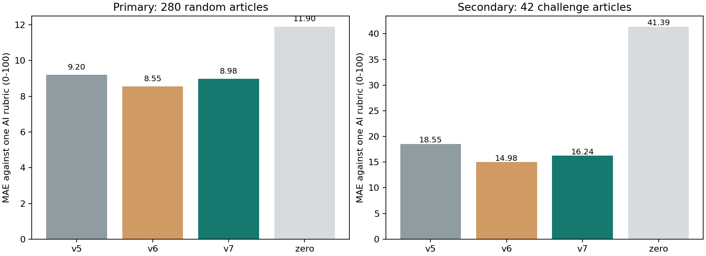

NEWS2NEURON / REPRODUCIBLE AI REFERENCE EVALUATION / v7
v7 후보는 검증 미달입니다. 최신 적용 점수와 두 실험 결과
잔존 위험을 더 정확하게,
개선 근거는 검증 가능하게.
실제 한국어 뉴스 8,128건을 대상으로 한 연구 지수입니다. 사건 발생 확률·사람의 스트레스·독립 사람 정답 정확도를 뜻하지 않습니다.
v6 → v7 평균 절대오차새 무작위 280건 · 7개 매체 · 100점 척도
10점 이내 AI 일치율같은 새 기사, 직접 덮기 전 모델 예측
사전 검증 기준모델·임계값·표본 고정 뒤 평가
개선의 범위와 한계
기준 판정은 현재 Codex 한 AI가 내렸습니다. 통계 범위는 이 AI 기준에 대한 오차이며, 기준 자체의 진실성이나 미래 뉴스·사람 판단에 대한 정확도를 입증하지 않습니다. 이전 판정 사건군을 제외한 표본이므로 전체 뉴스 분포의 대표성도 보장하지 않습니다.
기존 평가 자료는 개발 자료로 전환했습니다. v6의 실패 결과는 보존하고 당시 판정은 개발 자료로 전환했습니다. 개발 673건으로 모델을 고정한 뒤 새 322건의 정제 본문 전체를 읽었습니다. 주 평가는 7개 매체별 무작위 40건씩 280건, 어려운 기사 42건은 별도 보조 평가입니다. SBS는 새 사건군 부족으로 이번 확인 평가에서 제외했습니다. v7은 개선 기준을 통과하지 못해 기본 모델로 채택하지 않았습니다. 이 페이지 전체 기사 점수는 실험 후보의 결과이며 최종 적용 점수는 최신 배포 보고서를 보십시오. 결과를 본 뒤 기사·기준·점수를 제외하거나 고치지 않았습니다.
같은 새 표본의 모델 비교

항상 0으로 예측하는 기준도 포함합니다. 무위험 기사가 많다는 이유만으로 좋은 모델이라고 판단하지 않도록 위해 재현율과 큰 오차를 함께 공개합니다.
전체 기사 평가